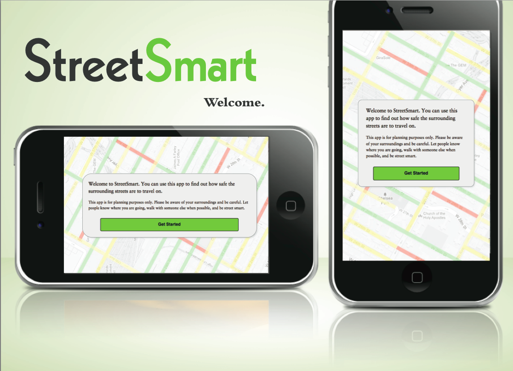
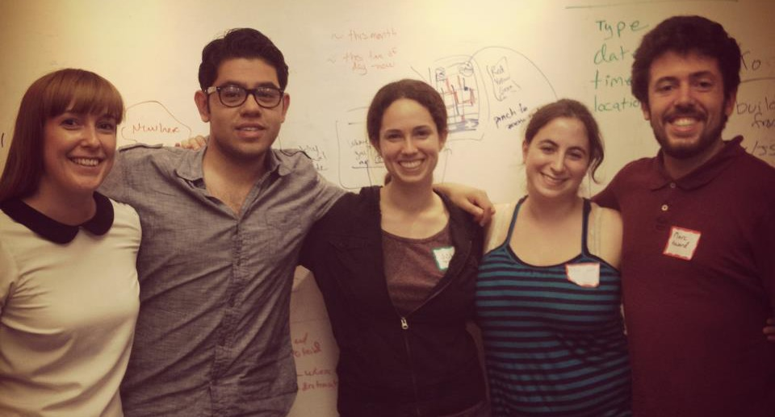
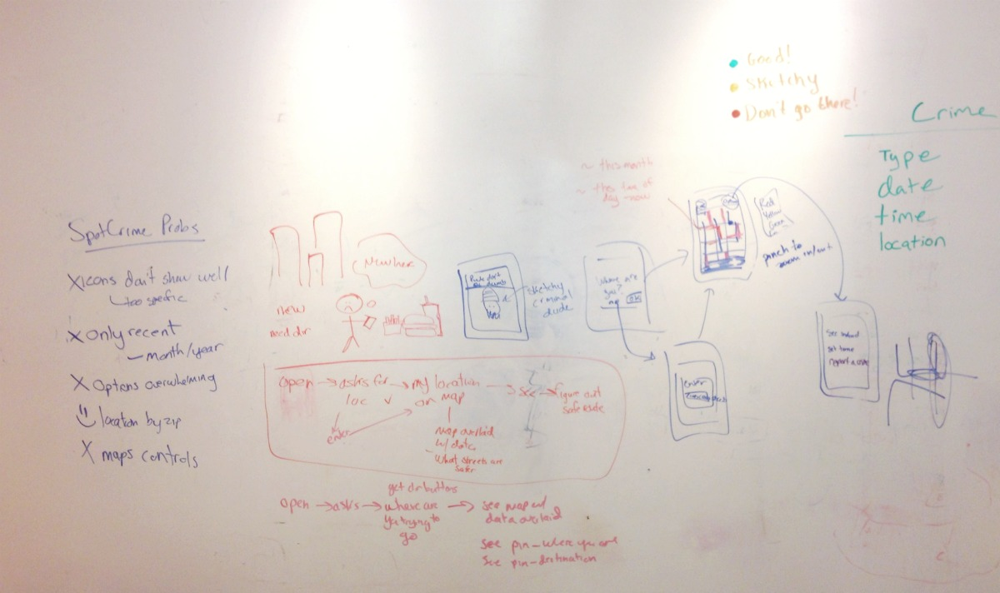
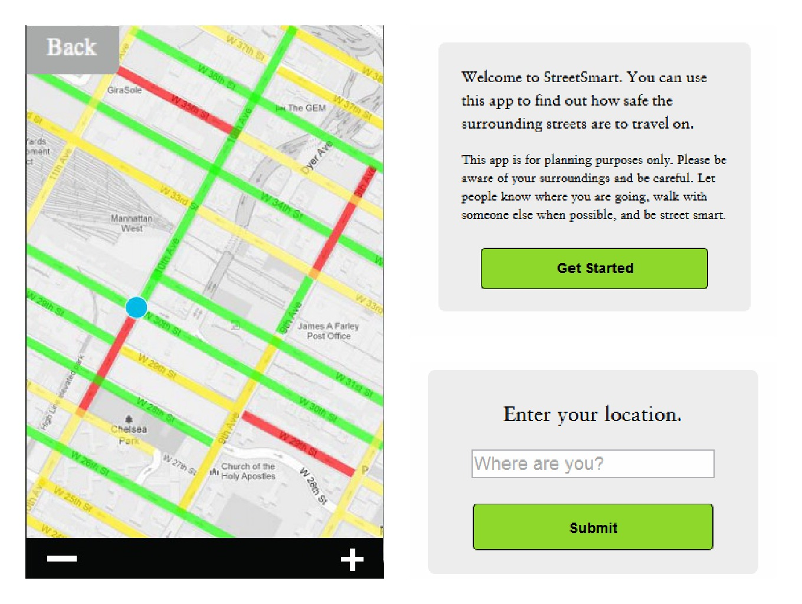
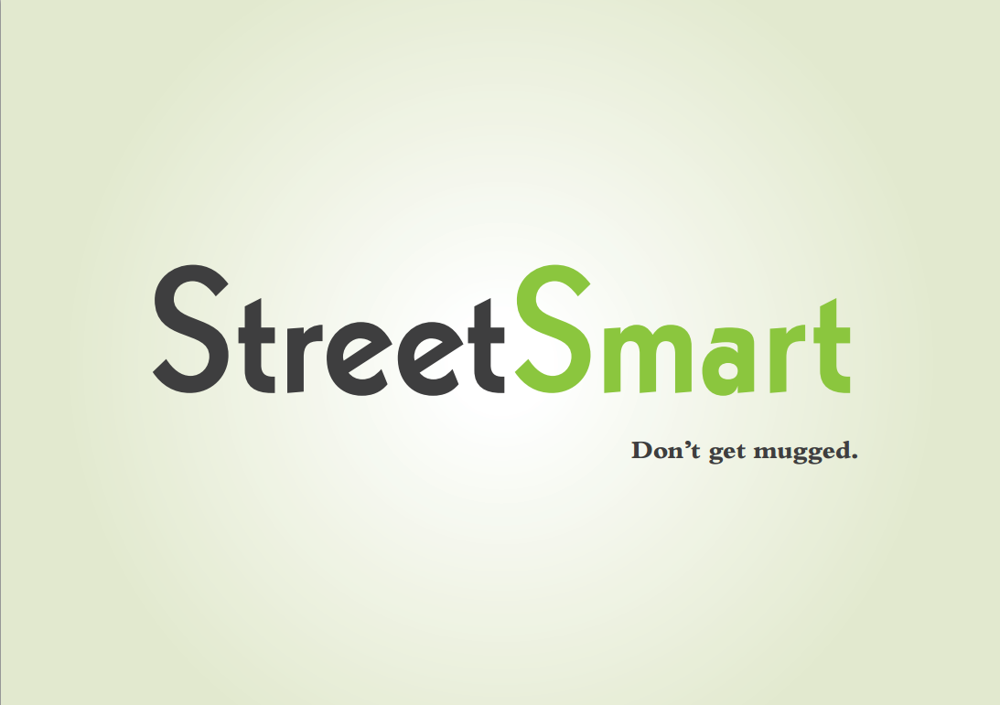
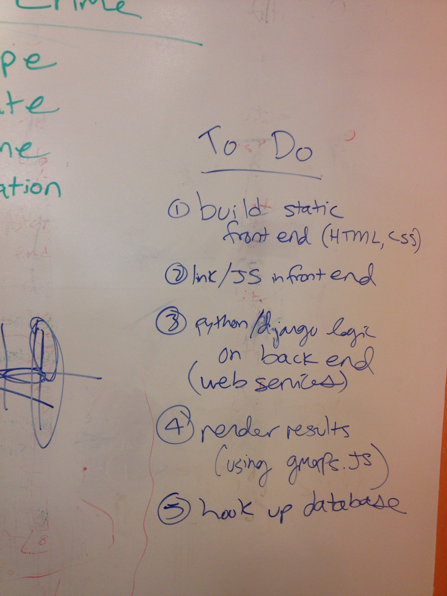

StreetSmart
StreetSmart is an app that helps you know what streets are safe to walk on at different times of day. My team and I designed and prototyped StreetSmart in a day at the Hack 'n Jill hackathon.
Introducing Team ‘Don’t Get Mugged’
In June 2012, I competed in the Hack ‘n Jill hackathon (my first hackathon). I worked with Angel Fleinhardt Martinez, Marc Howard, Miriam Melnick and Missy Kayko at AppNexus. Our app, StreetSmart, won first place.

What Should We Build?
The first challenge of the hackathon was deciding what to build. After forming our team at the hackathon kickoff event, we took a team trip to Shake Shack and talked about ideas.
We had four main criteria as we were picking ideas:
- Value: How useful and cool would this be?
- Scope: Can we do this in the amount of time we have (basically 12 hours)?
- Skills: What skills do we have? Do we know enough to have a chance at doing this?
- Learning: The team agreed we were mostly in this for fun and to learn. So, we also considered whether a project would let each of us learn interesting new things.
Sticky notes that sync across computers, extensions for google calendar—we considered many ideas. StreetSmart came up when I explained how, having just moved to Manhattan for the summer, I was always worried about what streets were safe to walk on (especially at night), and how I wished there were an app that could tell me that. And that’s where the idea for the app “Don’t Get Mugged” (later renamed to StreetSmart), began.
StreetSmart won out over our other ideas because we thought it would be the most valuable, in scope, and a good fit for the team’s skills and interests.
What’s Essential and What’s Extra?
At the beginning of the day and throughout, the team thought of great ideas to extend the app. It could have walking directions, or show you safe places to stop, etc. To keep things doable, we made a quick list of essentials vs. extras.
Essentials were basic:
- Crime data on a map
- Geolocation (a map of what’s near me)
Extras were cool, but probably not getting done during our day-long hackathon:
- Walking directions
- User-submitted crime data
- Location of police officers
- Locations of safe places to stop
- Better street-safety algorithms including things like lighting
Paring down the app to the bare minimum but holding onto our cool ideas for later allowed us to focus on getting the bare minimum working.
User Experience and User Interface
StreetSmart’s UX is to the point. The app geolocates users or asks them for their location (if it can’t retrieve it automatically), then displays a map of nearby streets, which are color coded for their safety based on crime data from SpotCrime.
To design how StreetSmart’s would work at the interface level, Missy and I, sketched out each screen of the app on a whiteboard, and drew arrows and notes to show how they went together.

Because the core purpose of our app is to provide information about what streets are safe to walk on, the most important decision about our user interface was how to present crime data on a map. To decide how our app should display crime data, we looked at how other apps displayed data on streetmaps (like traffic apps) and considered how we thought people would be using our app.
We decided to present crime data by color coding the relative safety of streets as follows (based on data about nearby, recent crimes):
- red: dangerous/risky
- yellow: probably OK
- green: pretty safe
We decided to present the data by overlaying the streets primarily because we believed that it would be the most useful and usable way to present the data. Color coding streets as red/yellow/green works with people’s existing association for those colors (from stoplights) and makes the map more skimmable (versus, for example, showing each recent crime incident as a point on the map.)

We also decided to make higher fidelity mockups since we had so few screens. The digital mockups helped the whole team get a more accurate idea of what our app would look like. They also made it easier for everyone to contribute to the front-end code.
Design
Name
We started out calling our app “Don’t Get Mugged”. Though memorable, the name had a few problems, including its length. To come up with a new name, we had a quick group brainstorming break, thinking of words that had to do with streets and roads and making better decisions. We ended up with StreetSmart (after a quick google search to make sure the name wasn’t taken.) We kept “Don’t Get Mugged” as our tagline.
Branding and UI Visuals

One goal for the visual design was to give stylistic hints about the function of the app. We (the designers on the team) picked Kabel Heavy for our logotype because the shape of the characters was similar to the way roads look on a map (for example, the shapes of the ‘s’ looks like a curvey road, and the ‘e’ could be a traffic circle with some imagination.)
The visual design for our app interface was minimal and functional. We used a serif font and relatively muted colors to make our app more serious (as it provides important safety information).
Technical Implementation
The architecture for our app had several main components:
- Data Source: We researched various sources of crime data and ended up using the SpotCrime API to get data about crimes within a given radius of a location.
- Server: When the server receives a user’s coordinates, it queries the SpotCrime database, then processes the crime data to compute safety ratings for each street. Miriam wrote a python web service to coordinate communication between the server and client.
- Front-End: We implemented the front end of our application using responsive HTML & CSS. We used gmaps.js to display our map and data.

Challenges
We ran into many technical challenges while implementing the app.
The biggest challenge for our team was trying to learn and use the Titanium SDK. The SDK simplifies the process of creating cross-platform apps. We tried to use it for a few hours, but after running into several stubborn problems, and given our very limited time (<12 hours), we scrapped it and made a mobile website instead.
The other challenge we dealt with was integrating all the components of our application. Our app included the SpotCrime API, our own server, a webservice, our website, Temboo’s geolocation API, and the Google Maps API. We spent hours trying to get all the pieces to work together properly. Since Miriam and I had the most experience working with both backend and front-end web code, we worked together to debug interactions between our app’s components.